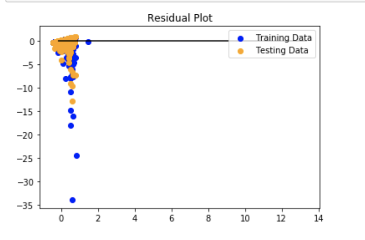

Source Quality Linear Regression/h1> 
What is regression: it’s a technique used to predict the value of a response (ie the dependent variable) from one or more predictors (independent variables). Log: Logistic regression is used when the dependent variable is binary in nature, so the outcome could only be in a 0 or 1 type outcome. The independent variables are not correlated, and are continuous in nature and the dependent variable is categorical ie in binary form. In Linear regression, there must be a linear relationship between the independent and dependent variables, and the independent variable doesn’t have to be continuous. For processing our data, we chose to focus on variables such as Source Quality, Region of Incidence, and Total Dead and Missing, as it was the most quantifiable part of our dataset. We modelled both the linear and logistic regression of our data, and found that the logistic regression was a better model. Since our source quality ranged from 1-5, we reclassified the data into reliable/unreliable source quality(3 or more, less than 3). This fits in with the binary nature of dependent variables in logistic models. In the linear regression, examining the residual plot, the training data is a fair bit below the residual line, so the error for each point is pretty high. However, for the testing data, it is not as below the residual line as the training data, so the model performs better out of sample than in sample. This can be attributed to the discrepancies within our dataset, and its lack of quality. The mean squared error for the linear model was 0.562, while the R squared value was 0.096 --which isn’t terrible but not ideal. The logistic model however, gave much better results.
Regression Analysis